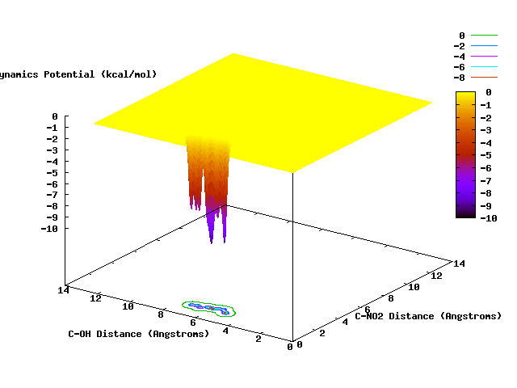

TO BE REVISED. MOST OF THE CONTENT HERE IS OBSOLETE¶
The current wiki has been created to provide documentation related to NWChem . This includes the user manual, tutorials and common practices, as well as programmer references, as well as other useful information. In order to make this wiki as useful as possible to the NWChem community a certain level of consistency of style is useful. To asist with this and beause of the nature of the subject matter of this specific wiki a number of tools and extensions have been selected to help document relevant aspects. These tools and suggestions for their use will be discussed here as well. Obviously for general information on these tools external references will be used.
Tools¶
This wiki has a number of extensions installed to facilitate the documentation process for which it is intended. The configuration of the wiki installation can found at Special:Version. For the purpose of this wiki there are a number of aspects that are relevant. These include Links, Equations, Citations, and Images.
Links¶
Links are an essential tool for integrating information from various sources. The wiki therefore supports a wide variety of links that can be used and details on how to used them can be found at Links, URLs. For general use there are a few types of links that are clearly important. These links include
- intra wiki links to other pages
- intra wiki links to sections of pages
- external links
Below a few simple examples can be found. However, before links are discussed a few comments on how the wiki handles anchors are in order so that there is a construct to link to.
Anchors on wiki pages¶
Anchors are points on the wiki pages that you can link to. Anchors are either automatically generated by the wiki but can also be created manually.
The wiki automatically creates anchors for all pages and all headers on each page. This means that you can link to every page and every section or subsection on every page in any case.
In cases where the automatically generated anchors do not provide for the right points to link to anchors can be created manually. In HTML one would use a construct such as \<a name=”link here”>text\</a>. However, the wiki does not allow the use of the \<a> tag. Instead, the “id” HTML attribute can be used with a number of tags to the same effect. Examples of this are:
<div id="link here">text</div>
<div id="link here"/>
<span id="link here">text</span>
Occasionally manually entered anchors are also needed where one would expect automatically generated anchors to work. For example, the automatically generated anchor for the subsection entitled “Dyall’s Modified Dirac Hamiltonian approximation” cannot be linked to as the apostrophe character cannot be used in a link. In this case adding an anchor manually for the title allows the subsection to be linked successfully. To see this compare the examples below:
[[Relativistic-All-electron-Approximations#Dyall's Modified Dirac-Hamiltonian approximation]]
[[Relativistic-All-electron-Approximations#Dyall-Mod-Dirac-Hamiltonian]]
Relativistic-All-electron-Approximations#Dyall's`` ``Modified``
``Dirac-Hamiltonian``
``approximation
Relativistic-All-electron-Approximations#Dyall-Mod-Dirac-Hamiltonian
Intra wiki links to other pages¶
Links to other pages are generated by placing the page title between double square brackets.
[[Getting Started]]
[[ECP|Effective Core Potentials]]
becomes
Getting`` ``Started
Effective`` ``Core`` ``Potentials
Note that spaces in the specified page name are automatically replaced by underscores to generate the correct link. In addition the “|” character may be used to specify a label for the link.
Intra wiki links to sections of pages¶
Links to sections of pages are a simple extension of the links to other pages. Similar to ordinary URLs one simply appends a “#” character followed by the section title. For example
[[ECP#Scalar ECPs]]
[[ECP#Scalar ECPs|Scalar Effective Core Potentials]]
results in
ECP#Scalar`` ``ECPs
Scalar`` ``Effective`` ``Core``
``Potentials
which takes you to the section “Scalar ECPs” on the ECP page. Obviously the construct to provide labels for links comes in handy to make these links look appealing.
External links¶
External links can be specified simply by placing the corresponding URL in single square brackets. For example
[http://dx.doi.org/10.1103/PhysRev.28.1049]
[http://dx.doi.org/10.1103/PhysRev.28.1049 Schrödingers wave mechanics (English)]
becomes
1
Schrödingers`` ``wave`` ``mechanics``
``(English)
The URLs may, of course, use any of the usual protocols including ftp: and mailto:. Note that in external links the “|” construct to provide a label does not work. Instead the text that appears after the first space is used as the label.
Equations¶
As people working in the quantum chemistry domain are usually familiar with LaTeX (and the original documentation was written in LaTeX) it is reasonable to provide a mechanism in which equations can be entered in LaTeX on the wiki pages. When a wiki page is saved the LaTeX equations are extracted and transformed to images which are displayed on pages served to readers.
This capability is offered by the \<math> … \</math> construct. With this construct the time dependent Schrödinger equation may be entered as:
<math>
\hat{H}\Psi = i\hbar\frac{\partial}{\partial t}\Psi
</math>
which comes out to look like
Because the expression is extracted, embedded in some default LaTeX shrubbery, and then passed to the LaTeX program for processing it is clear that only fairly standard mathematical commands are going to work. Therefore all equations need to be written in plain LaTeX without relying on special packages or user defined commands.
For further details, including a quick LaTeX math reference, more information can be found at displaying a formula.
Images¶
“One picture says more than a thousand words” is the cliche statement expressing that graphical representations can provide a very direct way to communicate something. For the purposes of this wiki there are three kinds of graphical representations that are clearly useful. They are: Charts (scaling curves, spectra, function plots, etc.), Diagrams (organization of code modules, flow charts, data dependency graphs, etc.), Pictures (images of computer, molecules, developers & collaborators, etc.). Although the need for supporting diagrams is foreseen this is currently not supported for technical reasons. The support for other kinds of graphical representations is described below.
Charts¶
To include charts on the wiki pages the extension http://www.mediawiki.org/wiki/Extension:Pchart4mw pChart4mw is supported. Although the link provides a reasonable documentation of the extension the salient points are summarized below. The extension works similar to many other tools. The extension detects certain keywords on the wiki page and extracts the associated data block. The data block is fed to a tool (pChart in this case) which renders a chart based on the data provided. The chart is subsequently included as an image on the page the wiki serves. The advantage of using a tool like this is that charts can easily be updated when new data becomes available. If the chart was uploaded as a picture instead the chances are that it can only be updated by redrawing it from scratch.
The extension supports a number of different kinds of charts. They are: line charts, bar charts, pie charts, scatter diagrams, radar charts and bubble charts. As line charts are probably the most important ones for our purposes let’s look at an example of a scaling curve.
<plines title="Scaling of NWChem DFT on C240" xtitle="processors" ytitle="time (s)" labels=true xlabels=true
legend=right cubic=true plots=closed>
,Fock_2e,Fock_xc,Diag
32, 2777, 35, 26
64, 1392, 19, 16
128, 691, 11, 12
256, 351, 7, 12
512, 178, 5, 12
1024, 91, 4, 12
2048, 51, 4, 13
4096, 31, 6, 13
</plines>
,Fock_2e,Fock_xc,Diag
32, 2777, 35, 26
64, 1392, 19, 16
128, 691, 11, 12
256, 351, 7, 12
512, 178, 5, 12
1024, 91, 4, 12
2048, 51, 4, 13
4096, 31, 6, 13
Obviously there are quite a number of attributes that can be set at the start of the chart data. The pChart4mw Parameters page provides details on which attributes can be set, how and what they mean.
Pictures¶
There are a variety of situations where the best way to show something is to provide a picture. In order to do this the image file has to be uploaded (see the Upload page) to the wiki server. Next a link on the wiki page to the image file has be included. In order to avoid trampling over previously uploaded image files it is recommended to check the list of previously uploaded files at the ListFiles page.
As an example the (old) NWChem logo image is used. First the picture was included on with wiki page using
[[file:Nwchem_logo_dark.png|NWChem logo]]
to give
{kind=link}
Alternatively the construct
[[media:Nwchem_logo_dark.png]]
gives
{kind=link}
The wiki page generated will include a link to the upload page to upload the file. Following the link the upload page is displayed with the destination file name already filled in (so less opportunity to introduce inconsistencies through typos). After that it is simply a matter of selecting the right file and click the upload button and the picture will appear on the wiki page.
Note that the ] construct introduces a link to the file instead of displaying its contents. This might be a good way to provide sample input files, for example.
Citations¶
In any scientific endeavor linking your statements to the work of others is essential in building interpersonal understanding of the scientific domain. As this wiki is about NWChem only the references cited tend to be related and each reference may be cited multiple times. So for consistency reasons alone it makes sense to store all the references in a single wiki-wide location. For this purpose RefBase was chosen which is a literature reference data base. The corresponding media wiki extension enables the wiki to query the data base to extract the citation, the citation data is parsed by media wiki’s Cite extension to generate the appropriate links on the page and the table of references at the bottom.
The consequence of this is that adding references is a two stage process:
- Add the reference data to the data base
- Cite the reference on the wiki page
Adding references in RefBase¶
To add references to the RefBase data base you will need a RefBase account (email e.g. huub to request one to be set up). Go to RefBase and login to get access to the data base. At the top of the page, right under the title “Your Literature Database”, two new links “add record” and “import” have now appeared.
Clicking “add record” brings up a form. Simply filling out the various fields on the form and clicking “Save Record” at the bottom of the page will add the data to the data base. It is recommended to also complete the DOI field as that eventually adds a link to the paper on the wiki page.
Alternatively, clicking “import” brings up a form that allows reference to be imported from external sources. These sources can be files containing references in the EndNote, BibTeX or other formats (see the import page for a complete list), or they can be web-based sources such as DOI, OpenURL, etc. Unfortunately the web-based sources importation does not seem to work at present. What does work is looking the paper up online and using the publisher’s export function to export the reference to a file of a format that RefBase recognizes and import this file into RefBase.
After entering a reference, you can find and inspect the details of it. Particularly relevant in this is the field “Serial” which is the reference number RefBase assigned to it. This is the data base’s primary key that you use to cite the reference on a wiki page.
Citing references on wiki pages¶
The mechanism for citing references from RefBase on a wiki is a two stage one. The first stage is extracting a reference from the RefBase data base. The second stage involves parsing and formatting the reference for presentation on the wiki page.
To extract a reference from RefBase use the construct
<refbase>14</refbase>
to obtain
14
This information is the same kind of information that could be provided manually to the Cite extension. For example
DIIS
<ref>Pulay, P. (1980). "Convergence acceleration of iterative sequences.
the case of scf iteration". Chemical Physics Letters 73: 393-398.
doi:10.1016/0009-2614(80)80396-4. ISSN 0009-2614</ref>
gives
DIIS
The combination of RefBase and Cite allows this to be rolled into one as
DIIS<ref><refbase>14</refbase></ref>
to yield
DIIS
The Cite extension obviously still needs somewhere to put the references being cited. It uses the construct
<references/>
for this. Where \<references/> is replaced with the list of references. An example of a table generated in this way can be found at the bottom of this page under the heading References.
Jmol extensions¶
JMol applets can be included in the pages. More information can be found at the MediaWiki Extension Page and the JMol Wiki Page.
Clicking the link above should pop up a Java Applet window!!!
Generating a new copy of the documentation to work on for next development release¶
The NWChem 6.0 documentation is in the main namespace, and should be left alone. The NWChem 6.1 documentation is in the namespace Release61. To make a duplicate of this documentation for Development or for a next release, the following approach works best:
- Go to Special Pages
- Go to All Pages and select the namespace you want the pages from
- Copy the list
- Go to Export pages
- Past the list, parse to one per line, add “namespace:” in front of each page
- Export the page into an XML document
- Edit the XML document and replace the old namespace with the new one you want to use. Example: replace “Release61:” with “Release 62:” and save.
- Add the new namespace you want to use in the list of defined namespaces with a unique numbering to LocalSettings.php . Also add the new numbers of the namespace of the CollectionArticleNamespaces list in LocalSettings.php
- Go to Import pages
- Read in the file
- Now you have a new set of pages with the new name space. beats copying one page at a time.
Updating release documentation on top¶
You need to update the page “MediaWiki:Sidebar”.
Making a PDF of the NWChem documentation¶
- In LocalSettings.php, uncomment the Collections.php extensions (don’t leave it there, comment out after you’re done so it’s not exposed to the users).
- In “Book Creator” add all individual pages in the documentation (in order). Add chapter headings like the documentation. Export to PDF, and you’re done.
Movies¶
The effort to add movies to the Wiki pages is under development.


Counters¶
Below is a list of files and the number of times they have been downloaded.
All Releases Downloads 
Latest Release Downloads 
Total Pre-Releases Downloads 
v6.8-beta.3 Downloads 
v6.8 Downloads 
References¶
13 Pulay,`` ``P.`` ``(1980).`` ``"Convergence`` ``acceleration`` ``of`` ``iterative`` ``sequences.`` ``the`` ``case`` ``of`` ``scf`` ``iteration".`` ``Chemical`` ``Physics`` ``Letters`` ``73:`` ``393-398.``.`` ``ISSN`` ``0009-261414